Attaque des titans (SNK) saison 4 partie 2 : date de sortie, trailer, Netflix...
La seconde partie de la saison 4 de SNK sera diffusée à partir du 9 janvier 2022. L’animé tiré du manga suivra la fin de celui-ci, et se conclura donc après cette ultime saison 4. Divisée en deux parties, la première était diffusée à partir du 07 décembre 2020 et comportait 16 épisodes (des chapitres 91 au 116 du manga). Pendant un long moment, les fans de l'univers de L'Attaque des Titans n'avaient qu'une vague fenêtre de sortie en "hiver 2022" et nombreux étaient ceux qui ignoraient la fin de la série ensuite. Vous voilà prévenus : profitez bien des 16 nouveaux épisodes à venir !
Publié le 21 Dec, 2021
Afficher les commentaires

Commentaires
Tania - 21/12/2021
La seconde partie de la saison 4 de SNK sera diffusée à partir du 9 janvier 2022.
Tania - 21/12/2021
La seconde partie de la saison 4 de SNK sera diffusée à partir du 9 janvier 2022.
Ajouter un commentaire